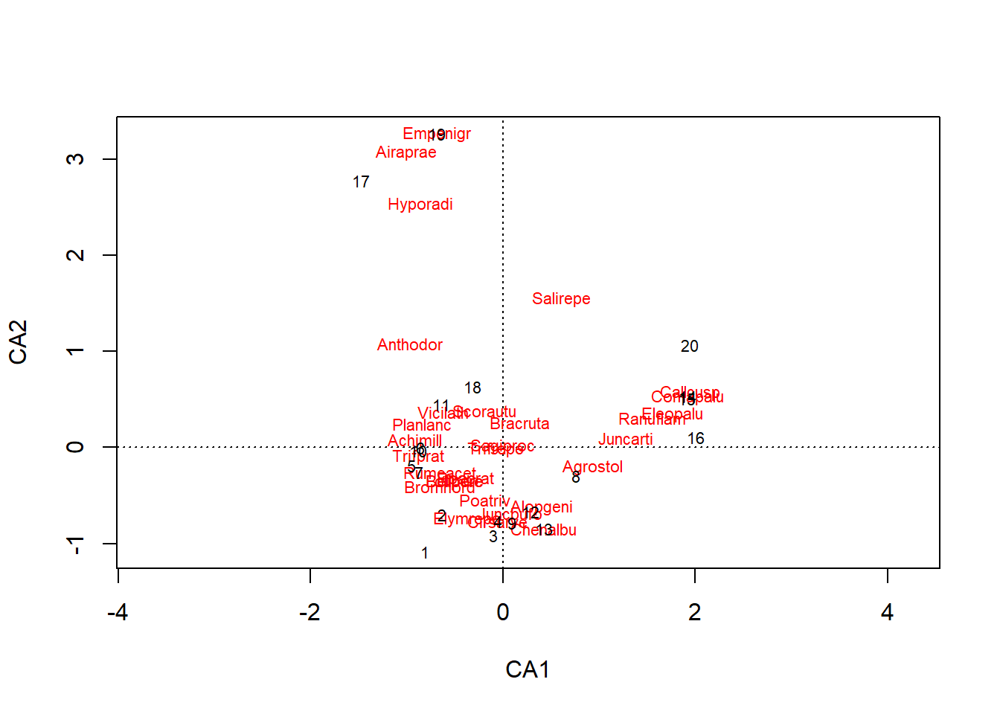
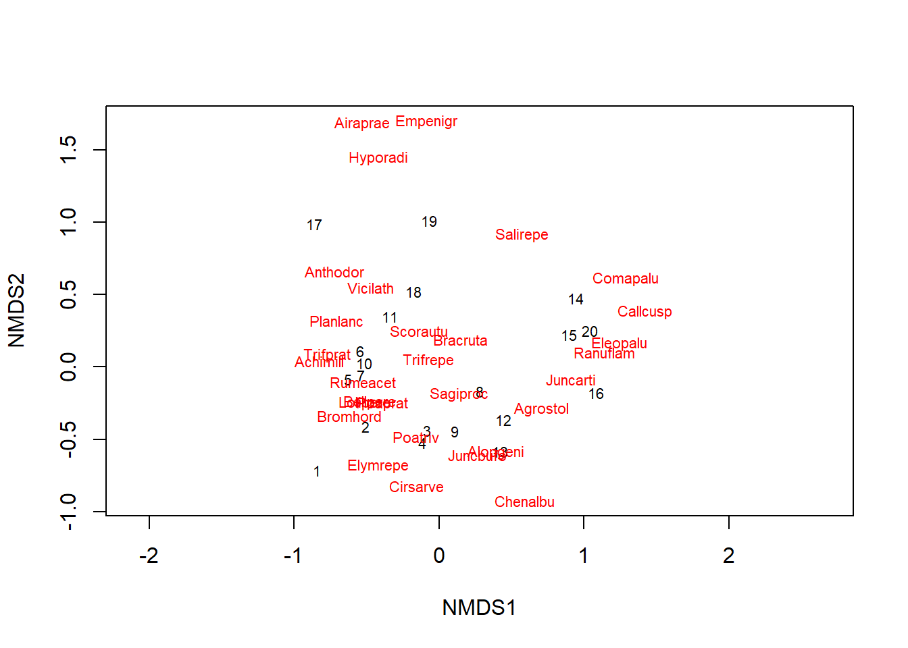
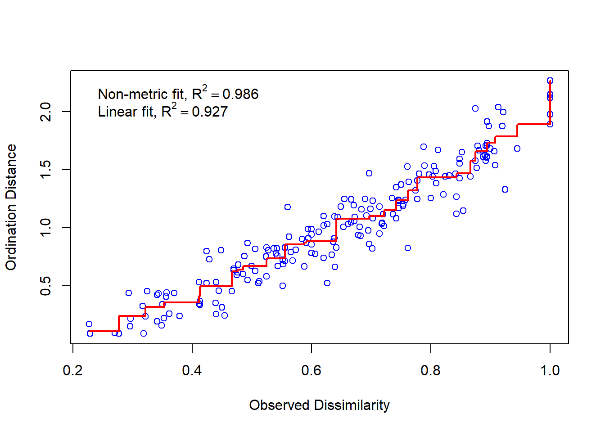
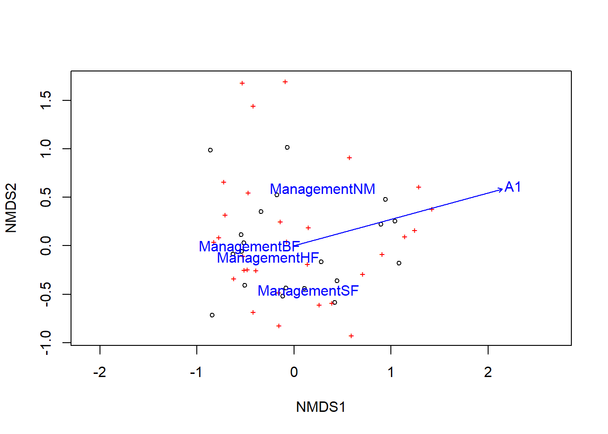
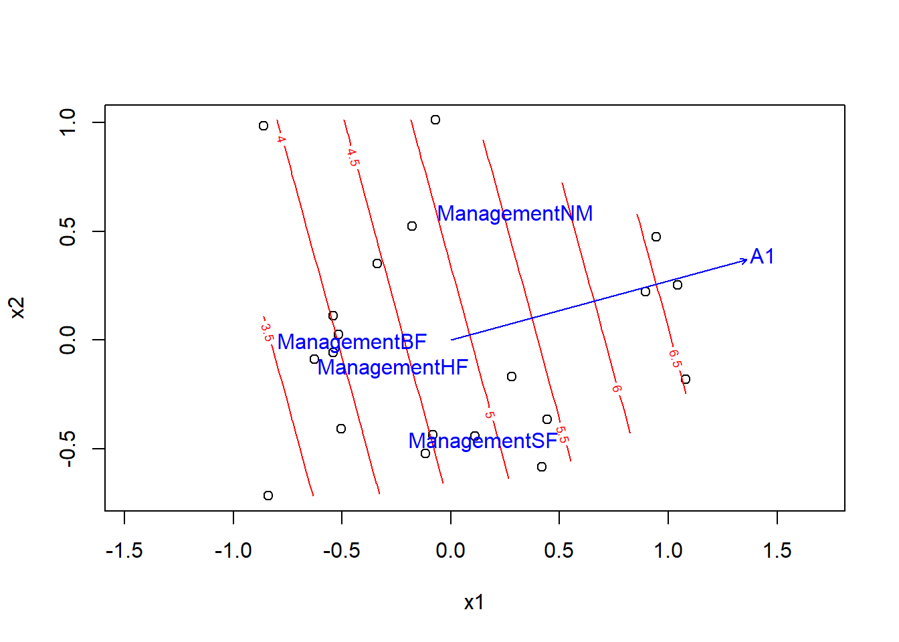

Analyses multivariées, Partie 2
10 décembre 2018
Objectifs
Appliquer des mesures de dissimilarité entre observations appropriées aux matrices de communauté écologique (abondance ou présence/absence).
Effectuer une ordination de données de communauté avec l’analyse de correspondance et le positionnement multidimensionnel non métrique (NMDS).
Superposer des gradients environnementaux aux résultats d’une ordination de communautés écologiques.
Utiliser l’ordination sous contraintes (analyse de redondance et analyse canonique de correspondance) afin de représenter la variation entre observations expliquée par des prédicteurs.
Données de présence ou d’abondance d’espèces
En écologie, les données multivariées prennent souvent la forme d’un tableau indiquant l’abondance (nombre d’individus, % de recouvrement) de différentes espèces sur chacun des sites étudiés.
esp <- cbind(esp1 = c(2, 8, 0, 3), esp2 = c(1, 3, 0, 0), esp3 = c(0, 0, 1, 0))
rownames(esp) <- c("site1", "site2", "site3", "site4")
esp## esp1 esp2 esp3
## site1 2 1 0
## site2 8 3 0
## site3 0 0 1
## site4 3 0 0Dans certains cas, nous n’avons pas d’estimation numérique de l’abondance, mais seulement un indicateur binaire de présence (1) ou d’absence (0) pour chaque combinaison espèce/site.
Problèmes avec la distance euclidienne
La semaine dernière, nous avons appliqué des méthodes d’ordination (analyse en composantes principales) et de regroupement à des variables numériques continues, telles que les variables climatiques d’un lieu ou la composition chimique d’un échantillon. Pour ce type de variable, la distance euclidienne constituait une bonne mesure de distance entre deux observations dans un espace multivarié (\(n\) observations de \(p\) variables). Cette distance correspond à la somme du carré des écarts entre les deux observations pour chacune des variables:
\[ d_{ij} = \sqrt{\sum_{k = 1}^p (y_{ik} - y_{jk})^2} \]
Dans cette équation, \(i\) et \(j\) sont des indices dénotant les observations (rangées) et \(k\) est l’indice de la variable (colonne).
L’analyse en composantes principales, qui ordonne les axes en fonction de leur contribution à la variance totale, vise notamment à bien représenter les distances euclidiennes entre les points, car la variance est basée sur le carré des écarts à la moyenne.
La distance euclidienne n’est pas une bonne mesure de la distance des communautés écologiques entre deux sites. Dans l’exemple ci-dessus, cette distance est de 6.3 entre les sites 1 et 2, mais seulement 2.4 entre les sites 1 et 3. Pourtant, 1 et 2 partagent les mêmes espèces dans des proportions similaires tandis que 1 et 3 n’ont aucune espèce en commun.
dist(esp)## site1 site2 site3
## site2 6.324555
## site3 2.449490 8.602325
## site4 1.414214 5.830952 3.162278Un autre problème de la distance euclidienne est la façon dont elle traite les zéros. Toutes autres choses étant égales, deux sites où une espèce est absente (0) sont plus similaires selon cette mesure que deux sites où l’espèce est présente à des niveaux un peu différents. Cependant, les écologistes préfèrent généralement ne pas traiter l’absence d’une espèce à deux sites comme indicatrice de similarité entre ces sites. Selon le concept de niche écologique, chaque espèce est soumise à plusieurs contraintes environnementales. Si la présence d’une même espèce sur deux sites peut être indicatrice d’une similarité d’habitat, cela est moins vrai pour une absence commune, car les deux sites peuvent être défavorables à l’espèce pour des raisons différentes.
Mesures de distance pour les abondances
La distance de Bray-Curtis \(d_{ij(BC)}\) (souvent appelée dissimilarité de Bray-Curtis) est une mesure mieux adaptée aux données d’abondance d’espèces:
\[ d_{ij(BC)} = \frac{\sum_{k=1}^p \left| y_{ik} - y_{jk} \right|}{y_{i \cdot} + y_{j \cdot}} \]
où \(y_{i \cdot}\) et \(y_{j \cdot}\) représentent l’abondance totale (toutes espèces confondues) des sites \(i\) et \(j\). La distance de Bray-Curtis mesure donc le rapport entre la somme des différences (en valeur absolue) entre les abondances pour chaque espèce et le nombre total d’individus de toutes les espèces. Elle prend une valeur minimum de 0 lorsque l’abondance observée est la même pour chaque espèce et une valeur maximum de 1 lorsque les sites n’ont aucune espèce en commun.
Cette mesure de distance, ainsi que plusieurs autres utilisées en écologie, peut être calculée avec la fonction vegdist du packge vegan, un package R spécialisé pour l’écologie des communautés.
library(vegan)
vegdist(esp, method = "bray")## site1 site2 site3
## site2 0.5714286
## site3 1.0000000 1.0000000
## site4 0.3333333 0.5714286 1.0000000Même si ce n’est pas évident avec cet exemple, la distance de Bray-Curtis, comme toutes les autres mesures de cette section, est indifférente aux espèces absentes des deux sites. Cependant, elle est sensible aux variations d’abondance totale entre deux sites (ex.: sites 1 et 2).
Si on s’intéresse à l’abondance relative des espèces pour un site (ce qu’on appelle parfois la composition ou le profil du site) plutôt qu’aux abondances brutes, nous pouvons diviser les abondances par leur somme pour chaque site. En calculant la distance euclidienne entre les proportions obtenues, nous obtenons la distance entre profils:
\[ d_{ij(prof)} = \sqrt{\sum_{k = 1}^p \left( \frac{y_{ik}}{y_{i \cdot}} - \frac{y_{jk}}{y_{j \cdot}} \right)^2} \]
La distance de Hellinger est semblable à la distance entre profils, sauf qu’elle est calculée à partir des racines carrées des proportions:
\[ d_{ij(Hel)} = \sqrt{\sum_{k = 1}^p \left( \sqrt{\frac{y_{ik}}{y_{i \cdot}}} - \sqrt{\frac{y_{jk}}{y_{j \cdot}}} \right)^2} \]
La fonction decostand de vegan aide à effecuter plusieurs transformations sur les matrices de données de communauté. Avec method = "total", cette fonction normalise chaque rangée de la matrice par sa somme (profil de site); avec method = "hellinger", elle normalise puis prend les racines carrées. La distance de Hellinger peut donc être obtenue en appliquant la fonction dist à la matrice résultante.
esp_hel <- decostand(esp, method = "hellinger")
dist(esp_hel)## site1 site2 site3
## site2 0.06600048
## site3 1.41421356 1.41421356
## site4 0.60581089 0.54258112 1.41421356Remarquez que la distance entre les sites 1 et 2 (qui ont presque le même profil, mais une abondance totale différente) est beaucoup plus petite avec cette mesure plutôt que celle de Bray-Curtis. La valeur maximale des distances entre profils et de Hellinger, obtenue lorsque les sites n’ont aucune espèce en commun, n’est pas 1 mais plutôt \(\sqrt{2}\) (environ 1.414).
D’après Legendre et Legendre (2012), la distance de Hellinger répond de façon plus linéaire aux changements d’abondance d’une espèce. La transformation de Hellinger est donc recommandée si on veut réaliser une ACP sur des données d’abondance. Nous verrons dans la prochaine section une autre méthode d’ordination pour ce type de données, l’analyse de correspondance.
Finalement, la distance du \(\chi^2\) est semblable à la distance entre profils, excepté que la contribution d’une espèce \(k\) est divisée par \(p_k\), la fraction de l’ensemble des individus de tous les sites provenant de l’espèce \(k\). Par rapport aux autres mesures, cette distance augmente donc l’importance des espèces rares dans la détermination de la dissimilarité entre les sites.
\[ d_{ij(\chi^2)} = \sqrt{\sum_{k = 1}^p \frac{1}{p_k} \left( \frac{y_{ik}}{y_{i \cdot}} - \frac{y_{jk}}{y_{j \cdot}} \right)^2} \]
Dans R, cette distance est aussi calculée à partir d’une transformation avec decostand suivie du calcul de la distance euclidienne sur les données transformées.
esp_chi2 <- decostand(esp, method = "chi.square")
dist(esp_chi2)## site1 site2 site3
## site2 0.1470196
## site3 4.3721144 4.3665855
## site4 0.8086075 0.6615880 4.4027963La valeur maximale de \(d_{(\chi^2)}\) est égale à \(\sqrt{2N}\) ou \(N\) est la somme de toutes les entrées de la matrice. Cette valeur maximale n’est atteinte que si chacun des deux sites comparés est composé d’une seule espèce (différente entre les deux).
Laquelle de ces distances utiliser dans une analyse de regroupement, par exemple? Cela dépend de l’accent qu’on veut mettre sur divers types de différences. Notamment, on choisira:
- la distance de Bray-Curtis si les différences absolues d’abondance (nombre d’individus) sont importantes;
- la distance de Hellinger si on se préoccupe des différences relatives d’abondance (proportion d’individus) et qu’on veut accorder plus d’emphase aux espèces communes;
- la distance du \(\chi^2\) si on se préoccupe des différences relatives et qu’on veut accorder une plus grande importance aux espèces rares.
Mesures de distance pour les données de présence
Avec des données sur la présence ou l’absence d’espèces, on peut résumer la relation entre deux sites par un tableau 2x2.

Dans ce tableau, \(a\) représente le nombre d’espèces présentes aux deux sites, \(b\) le nombre d’espèces présentes au site 1 mais pas au site 2, et ainsi de suite.
L’indice de Jaccard mesure la similarité entre deux sites:
\[ J = \frac{a}{a + b + c} \]
Cet indice prend des valeurs entre 0 (aucune espèce commune) et 1 (mêmes espèces). L’indice de Sorenson est défini de façon similaire, excepté que les espèces présentes aux deux sites sont comptées deux fois.
\[ S = \frac{2a}{2a + b + c} \]
Pour définir une distance (dissimilarité) à partir de ces indices, il suffit d’appliquer la transformation \(1 - J\) ou \(1 - S\). Notez qu’aucun des deux indices ne tient compte des espèces absentes des deux sites (\(d\)); tel que mentionné plus tôt, les espèces dans ce groupe donnent peu d’information sur la similarité entre les sites.
La fonction vegdist(..., method = "jaccard") calcule la distance de Jaccard (\(1 - J\)). Quant à \(1 - S\), sa valeur correspond exactement à la distance de Bray-Curtis si celle-ci est appliquée à une matrice binaire.
Ordination de matrices de communautés écologiques
Analyse de correspondance
Si l’analyse en composantes principales (ACP) est une méthode d’ordination adaptée aux tableaux de données numériques continues, l’analyse de correspondance (correspondence analysis) est une ordination adaptée aux tableaux de contingence. Rappelez-vous qu’un tableau de contingence est une matrice représentant le nombre d’observations (la fréquence \(f\)) pour chaque combinaison des niveaux de deux variables catégorielles. En écologie, une matrice de communauté (abondance ou présence/absence) peut être considérée comme un tableau de contingence pour les variables catégorielles “site” et “espèce”.
Dans le cours sur le test du \(\chi^2\), nous avons vu que la fréquence attendue pour une cellule \((i, j)\) du tableau si les deux variables sont indépendantes est égale à \(\hat{f_{ij}} = N_i N_j / N\), où \(N_i\) est la somme des fréquences de la rangée \(i\), \(N_j\) est la somme de la colonne \(j\) et \(N\) est le total des fréquences du tableau. La statistique du \(\chi^2\) est basée sur une version normalisée des déviations entre les fréquences observées et attendues:
\[\chi_{ij} = \frac{f_{ij} - \hat{f_{ij}}}{\sqrt{\hat{f_{ij}}}} \]
Le \(\chi^2\) est la somme des carrés de ces résidus \(\chi_{ij}\). Dans le contexte écologique, un résidu positif élevé indique que le site \(i\) est très favorable pour l’espèce \(j\), tandis qu’un résidu négatif indique un site défavorable pour cette espèce.
L’analyse de correspondance réalise une ordination de ces résidus \(\chi_{ij}\) pour obtenir des composantes orthogonales qui expliquent une fraction décroissante du \(\chi^2\) total du tableau de contingence. Le nombre maximal de composantes est égal à \(\min(r - 1, c - 1)\) où \(r\) et \(c\) sont le nombre de rangées et de colonnes du tableau, respectivement.
Contrairement à l’ACP qui fait une distinction entre observations et variables, l’analyse de correspondance est symétrique; elle ordonne simultanément les sites en fonction des espèces et vice versa. Cela influence l’interprétation des résultats, comme nous verrons dans l’exemple suivant.
Si l’ACP donne une bonne représentation de la distance euclidienne entre les sites, l’analyse de correspondance donne une bonne représentation de la distance du \(\chi^2\). Par rapport à d’autres ordinations, elle accorde ainsi un plus grand poids aux espèces rares.
Exemple avec R
Le tableau dune inclus avec le package vegan contient des données d’abondance de 30 espèces végétales sur 20 sites.
L’analyse de correspondance peut être réalisée avec la fonction cca de vegan; le nom de cette fonction vient du fait qu’elle est aussi utilisée pour l’analyse canonique de correspondance que nous verrons plus loin. Notez que les fonctions de vegan peuvent être appliquées à d’autres types de données, même si le résultat réfère toujours aux colonnes comme des espèces et aux rangées comme des sites.
data(dune)
ac_dune <- cca(dune)
# display = "reg" pour ne pas afficher toutes les coordonnées d'espèce et de site
summary(ac_dune, display = "reg") ##
## Call:
## cca(X = dune)
##
## Partitioning of scaled Chi-square:
## Inertia Proportion
## Total 2.115 1
## Unconstrained 2.115 1
##
## Eigenvalues, and their contribution to the scaled Chi-square
##
## Importance of components:
## CA1 CA2 CA3 CA4 CA5 CA6 CA7
## Eigenvalue 0.5360 0.4001 0.2598 0.17598 0.14476 0.10791 0.09247
## Proportion Explained 0.2534 0.1892 0.1228 0.08319 0.06844 0.05102 0.04372
## Cumulative Proportion 0.2534 0.4426 0.5654 0.64858 0.71702 0.76804 0.81175
## CA8 CA9 CA10 CA11 CA12 CA13
## Eigenvalue 0.08091 0.07332 0.05630 0.04826 0.04125 0.03523
## Proportion Explained 0.03825 0.03466 0.02661 0.02282 0.01950 0.01665
## Cumulative Proportion 0.85000 0.88467 0.91128 0.93410 0.95360 0.97025
## CA14 CA15 CA16 CA17 CA18
## Eigenvalue 0.020529 0.014911 0.009074 0.007938 0.007002
## Proportion Explained 0.009705 0.007049 0.004290 0.003753 0.003310
## Cumulative Proportion 0.979955 0.987004 0.991293 0.995046 0.998356
## CA19
## Eigenvalue 0.003477
## Proportion Explained 0.001644
## Cumulative Proportion 1.000000
##
## Scaling 2 for species and site scores
## * Species are scaled proportional to eigenvalues
## * Sites are unscaled: weighted dispersion equal on all dimensionsLa fraction de la variation totale expliquée par les composantes 1 et 2 peut paraître faible (44%), mais il faut considérer que nous avons réduit la dimensionnalité de 30 à 2 variables.
La fonction plot représente les espèces (en rouge) et les sites (en noir) sur les deux premiers axes.
plot(ac_dune)
Dans l’ACP, les variables étaient représentées par des vecteurs (flèches) et il fallait interpréter la direction et la longueur de ces vecteurs. Ici, les espèces et les sites sont des points sur la même échelle; la proximité entre un site et une espèce indique une association entre les deux. Aussi, la proximité entre deux sites indiquent qu’ils ont une communauté similaire et la proximité entre deux espèces indiquent qu’elles occupent des sites similaires. Les coordonnées des espèces et des sites peuvent être extraites avec la fonction scores(ac_dune).
Nous pouvons voir l’importance aux espèces rares accordées dans cette ordination. Par exemple, l’espèce Chenalbu dans le bas du graphique a un seul individu, qui se retrouve au site 13.
En général, l’abondance d’une espèce n’est pas une fonction linéaire d’un gradient environnemental (ex.: température); l’espèce atteint un maximum à une valeur optimale et son abondance diminue pour des valeurs plus grandes ou plus petites de la variable environnementale. Cette non-linéarité fait qu’une série de sites ordonnés selon un gradient environnemental suivront une courbe sur un graphique d’ordination. Cela pourrait être le cas ici, avec la présence d’une spirale commençant autour du point (0, 0). Des méthodes ont été proposées pour rectifier ces courbes (detrended correspondence analysis ou DCA), mais ces méthodes ne sont pas recommandées, sauf dans les rares cas où l’ordination est dominée par un seul gradient important. Une meilleure solution serait de superposer le gradient environnemental au graphique de l’ordination, comme nous verrons plus tard.
Positionnement multidimensionnel non-métrique
Une autre méthode d’ordination couramment appliquée en écologie est le positionnement multidimensionnel non-métrique (non-metric multidimensional scaling, ou NMDS). Cette méthode utilise comme point de départ une matrice de distance entre les sites, puis applique un algorithme itératif pour trouver une configuration de points dans un nombre réduit de dimensions (généralement 2) qui représente le mieux la distance entre les sites.
La correspondance entre la matrice de distance originale \(d\) et la distance euclidienne dans l’espace réduit \(\hat{d}\) est mesurée par le stress:
\[ \sqrt{\frac{\sum_{(i, j)} (d_{ij} - \hat{d_{ij}})^2}{\sum_{(i, j)} d_{ij}^2}} \]
Dans cette formule, chaque somme est réalisée sur toutes les paires d’observations.
Le principal avantage de cette méthode est sa flexibilité. On peut réaliser le positionnement en fonction de n’importe quelle mesure de distance. En contrepartie, il s’agit d’un algorithme heuristique qui peut ne pas converger, ou converger vers des solutions différentes selon les conditions de départ.
La fonction metaMDS corrige cette deuxième lacune en répétant l’algorithme à plusieurs reprises à partir de configurations initiales aléatoires, pour augmenter les chances de détecter le résultat optimal. La distance de Bray-Curtis est souvent recommandée pour l’analyse des données d’abondance avec cet algorithme et il s’agit du choix de distance par défaut pour metaMDS.
md_dune <- metaMDS(dune, distance = "bray")Durant l’exécution de la fonction, R indique le stress pour chaque répétition de l’algorithme et indique à la fin si une solution optimale a été trouvée. Si l’algorithme ne converge pas, il faut répéter metaMDS en indiquant un nombre d’essais (argument try) supérieur à 20.
La fonction plot affiche le résultat du positionnement en deux dimensions. Le NMDS ordonne les sites, puis la position des espèces est déterminée en fonction de la position des sites où ces espèces se trouvent. Nous spécifions l’argument type = "t" pour afficher les noms des sites et des espèces plutôt que des points seuls.
plot(md_dune, type = "t")
Remarquez que ce graphique ressemble beaucoup aux résultats de l’analyse de correspondance. Par rapport à cette dernière, la position des sites est moins influencée par les espèces rares; par exemple, le site 13 est moins éloigné du centre et plus éloigné de l’espèce Chenalbu.
La valeur du stress est de 0.118 pour ce résultat. De façon générale, un stress inférieur à 0.1 est excellent est un stress supérieur à 0.2 est mauvais. On peut aussi utiliser la fonction stressplot pour vérifier le niveau de correspondance entre les distances du NMDS et la matrice de distance originale entre les sites.
stressplot(md_dune)
Effet de prédicteurs sur une réponse multivariée
Jusqu’à présent, nous avons vu comment représenter la variation entre les communautés écologiques présentes sur divers sites. Cette dernière partie porte sur des méthodes permettant d’associer cette variation à des prédicteurs mesurés pour les mêmes sites.
Nous utiliserons encore le tableau de données dune comme exemple, avec le tableau associé dune.env qui contient les valeurs de cinq variables associées aux 20 sites.
data(dune.env)
head(dune.env)## A1 Moisture Management Use Manure
## 1 2.8 1 SF Haypastu 4
## 2 3.5 1 BF Haypastu 2
## 3 4.3 2 SF Haypastu 4
## 4 4.2 2 SF Haypastu 4
## 5 6.3 1 HF Hayfield 2
## 6 4.3 1 HF Haypastu 2Ce tableau contient une seule variable numérique (A1, l’épaisseur de la couche A1 du sol), deux variables catégorielles nominales (Management et Use) et deux variables catégorielles ordinales (Moisture et Manure).
Analyse de variance multivariée
Il existe plusieurs versions multivariées de l’ANOVA. La fonction adonis de vegan estime la fraction des distances entre sites expliquée par différents prédicteurs. Pour chaque variable indépendante, cette méthode calcule une statistique \(F\) semblable à l’ANOVA univariée. Toutefois, la valeur \(p\) de cette statistique n’est pas basée sur un test théorique, mais plutôt par un test de permutation: la fonction effectue 999 permutations aléatoires des valeurs de la variable indépendante et calcule la statistique \(F\) pour chaque permutation. La distribution résultante représente l’hypothèse nulle selon laquelle la variable n’a aucun effet. Cette méthode est connue sous le nom de PERMANOVA (pour permutational multivariate analysis of variance).
La formule donnée à la fonction adonis ressemble à celle d’un modèle linéaire en R, sauf que la réponse est une matrice de communauté plutôt qu’une variable unique. On peut spécifier la mesure de distance à utiliser; il s’agit de la distance de Bray-Curtis par défaut.
adonis(dune ~ A1 + Moisture + Management + Use + Manure, dune.env)##
## Call:
## adonis(formula = dune ~ A1 + Moisture + Management + Use + Manure, data = dune.env)
##
## Permutation: free
## Number of permutations: 999
##
## Terms added sequentially (first to last)
##
## Df SumsOfSqs MeanSqs F.Model R2 Pr(>F)
## A1 1 0.7230 0.72295 5.2038 0.16817 0.001 ***
## Moisture 3 1.1871 0.39569 2.8482 0.27613 0.006 **
## Management 3 0.9036 0.30121 2.1681 0.21019 0.034 *
## Use 2 0.0921 0.04606 0.3315 0.02143 0.986
## Manure 3 0.4208 0.14026 1.0096 0.09787 0.469
## Residuals 7 0.9725 0.13893 0.22621
## Total 19 4.2990 1.00000
## ---
## Signif. codes: 0 '***' 0.001 '**' 0.01 '*' 0.05 '.' 0.1 ' ' 1Comme pour l’ANOVA univariée, cette méthode considère les variables dans l’ordre donné: Moisture donne la fraction de la distance expliquée après avoir tenu compte de l’effet de A1, Management la fraction expliquée après avoir tenu compte de A1 et Moisture, etc.
Dans l’ANOVA univariée, nous vérifions d’abord que la variance était constante entre les groupes avant de comparer les moyennes. La PERMANOVA ne suppose pas l’égalité des variances; toutefois, une différence significative associée à une variable peut représenter soit une différence de la composition “moyenne” des communautés selon cette variable, soit une différence dans la variance de la composition. Pour bien interpréter les résultats, il peut être utile de visualiser la relation entre les variables et les sites placés sur une ordination, comme nous le verrons dans la section suivante.
Superpositions des prédicteurs aux axes d’ordination
Une deuxième technique pour déterminer l’effet de variables explicatives sur une réponse multivariée consiste à réaliser d’abord une ordination de la réponse, puis de corréler les variables au résultat de l’ordination.
Si les composantes principales sont orthogonales (ce qui est le cas pour l’ACP et l’AC, mais pas le NMDS), on peut effectuer une régression séparée de chaque composante en fonction des prédicteurs. Une autre option est d’estimer simultanément la corrélation entre des variables explicatives et chacun des axes, ce qui est fait par la fonction envfit de vegan.
La fonction envfit requiert deux paramètres, soit le résultat d’une ordination et un tableau de données pour les prédicteurs. Ici, nous vérifions le lien entre les composantes du NMDS du tableau dune, l’épaisseur du sol (A1) et du type d’aménagement (Management).
envf <- envfit(md_dune, select(dune.env, A1, Management))
envf##
## ***VECTORS
##
## NMDS1 NMDS2 r2 Pr(>r)
## A1 0.96474 0.26321 0.3649 0.018 *
## ---
## Signif. codes: 0 '***' 0.001 '**' 0.01 '*' 0.05 '.' 0.1 ' ' 1
## Permutation: free
## Number of permutations: 999
##
## ***FACTORS:
##
## Centroids:
## NMDS1 NMDS2
## ManagementBF -0.4534 -0.0102
## ManagementHF -0.2636 -0.1282
## ManagementNM 0.2958 0.5790
## ManagementSF 0.1506 -0.4670
##
## Goodness of fit:
## r2 Pr(>r)
## Management 0.4134 0.009 **
## ---
## Signif. codes: 0 '***' 0.001 '**' 0.01 '*' 0.05 '.' 0.1 ' ' 1
## Permutation: free
## Number of permutations: 999Pour la variable numérique A1, le résultat indique la magnitude et la direction de l’effet d’une augmentation de cette variable sur les deux axes du NMDS (donc un vecteur), ainsi qu’une valeur \(r^2\) donnant la portion de la variance expliquée par cette corrélation. Pour une variable catégorielle comme Management, le résultat indique la position moyenne (centroïde) sur les deux axes des sites correspondant à chaque catégorie.
Si on trace le graphique d’ordination au préalable, on peut y ajouter le vecteur A1 et les centroïdes pour chaque type d’aménagement en appliquant la fonction plot au résultat d’envfit.
plot(md_dune)
plot(envf)
Si plus d’une variable numérique était incluse, la longueur des vecteurs serait représentative de l’importance de l’effet de chaque variable, mesurée par le \(r^2\).
Les valeurs \(p\) pour l’effet de chaque variable dans envfit sont déterminées par test de permutation, comme pour la PERMANOVA. Les valeurs \(p\) et les coefficients \(r^2\) sont différents dans les deux cas, car la PERMANOVA évaluait l’effet des variables sur la variation multidimensionnelle totale, tandis que le résultat d’envfit mesure l’effet sur l’ordination en deux dimensions.
La fonction envfit tente d’identifier une corrélation linéaire entre une variable numérique et les axes d’ordination. Pour représenter un gradient environnemental non-linéaire comme une surface en deux dimensions, nous pouvons utiliser la fonction ordisurf. La surface estimée est représentée par des lignes de contour (comme une carte topographique) sur les axes de l’ordination. Dans l’exemple suivant, nous montrons les lignes de contour pour l’épaisseur du sol A1 sur les deux axes du NMDS, puis y superposons le vecteur obtenu avec envfit.
ords <- ordisurf(md_dune, dune.env$A1)plot(ords)
plot(envf)
Puisque les lignes de contour sont parallèles et également espacées, l’effet d’A1 semble effectivement être linéaire dans cette représentation.
Ordination sous contraintes
Les méthodes d’ordination que nous avons vues jusqu’à maintenant sont du type “sans contrainte”, c’est-à-dire que l’ordination structure la variation de réponse multivariée sans faire référence à des variables explicatives. Dans l’ordination sous contraintes, le choix des axes est basé sur la partie de la réponse expliquée par des prédicteurs donnés. Ces méthodes incluent l’analyse de redondance (redundancy analysis) et l’analyse canonique de correspondance (canonical correspondence analysis).
Prenons une matrice réponse \(Y\) contenant \(n\) observations de \(p\) variables. Supposons que nous effectuons séparément la régression linéaire de chacune des \(p\) variables en fonction d’un même ensemble de prédicteurs \(x_1\), \(x_2\), etc. Par exemple, la régression de la variable \(j\) donne une valeur attendue (fitted) \(\hat{y}_{ij}\) pour chaque observation \(i\) de cette variable. Nous pouvons ensuite combiner les valeurs attendues de chaque régression dans une matrice \(\hat{Y}\).
\[ \begin{bmatrix} \hat{y}_{11} & \hat{y}_{12} & ... & \hat{y}_{1p} \\ \hat{y}_{21} & \hat{y}_{22} & ... & \hat{y}_{2p} \\ ... & ... & ... & ... \\ \hat{y}_{n1} & ... & ... & \hat{y}_{np} \end{bmatrix} \]
L’analyse de redondance (ADR) est équivalente à une analyse en composantes principales réalisée non pas sur la réponse multivariée originale \(Y\), mais plutôt sur \(\hat{Y}\), soit la partie de la réponse expliquée par des prédicteurs donnés.
Pour appliquer l’analyse de redondance au tableau de données dune, nous effectuons d’abord une transformation de Hellinger, tel que vu dans la première section de ce cours, puis nous appelons la fonction rda pour modéliser la composition en fonction des variables A1 et Management. Comme pour adonis, le tableau de la réponse multivariée apparaît à gauche de la formule.
dune_hel <- decostand(dune, method = "hellinger")
dune_hel <- scale(dune_hel)
rda_dune <- rda(dune_hel ~ A1 + Management, dune.env)
rda_dune## Call: rda(formula = dune_hel ~ A1 + Management, data = dune.env)
##
## Inertia Proportion Rank
## Total 30.0000 1.0000
## Constrained 10.8492 0.3616 4
## Unconstrained 19.1508 0.6384 15
## Inertia is variance
##
## Eigenvalues for constrained axes:
## RDA1 RDA2 RDA3 RDA4
## 4.395 3.404 1.755 1.295
##
## Eigenvalues for unconstrained axes:
## PC1 PC2 PC3 PC4 PC5 PC6 PC7 PC8 PC9 PC10 PC11 PC12
## 4.302 3.120 2.343 1.965 1.667 1.414 1.029 0.947 0.784 0.625 0.368 0.277
## PC13 PC14 PC15
## 0.133 0.119 0.056La régression linéaire effectuée en première étape de l’ADR compte ici 4 prédicteurs (1 pour A1 et 3 pour le facteur à 4 niveaux Management). Dans ce cas, puisque la matrice \(\hat{Y}\) est une combinaison linéaire des prédicteurs, elle ne peut avoir que 4 composantes principales. La résultat de l’ADR nomme ces 4 composantes “axes contraints” (RDA1 à RDA4). L’ADR effectue aussi une ACP séparée pour les résidus de la régression (\(Y\) - \(\hat{Y}\)); cette ACP résulte en 15 axes non contraints pour les 15 degrés de liberté résiduels.
Le graphique d’une ADR est appelé diagramme de triple projection (triplot), car il représente à la fois les observations (sites), les variables de réponse (espèce) et les prédicteurs (conditions environnementales). Notez que puisque l’ADR est basée sur l’ACP, les espèces devraient être représentées par des vecteurs ici (comme le prédicteur numérique A1), mais les flèches sont omises par vegan pour éviter de surcharger le graphique.
plot(rda_dune)
Les coordonnées des sites et espèces sur les deux premiers axes de l’ADR peuvent être consultées en appelant la fonction scores(rda_dune).
Si l’analyse de redondance est la combinaison d’une régression et d’une ACP, l’analyse canonique de correspondance (ACC) est la combinaison d’une régression et d’une analyse de correspondance. Comme l’analyse de correspondance, l’ACC est basée sur les résidus du \(\chi_{ij}\) d’un tableau de contingence. Une régression est appliquée à ces résidus en fonction des prédicteurs, puis une ordination est appliquée aux valeurs attendues estimées par cette régression. Voici un exemple avec la fonction cca de vegan:
cca_dune <- cca(dune ~ A1 + Management, dune.env)
cca_dune## Call: cca(formula = dune ~ A1 + Management, data = dune.env)
##
## Inertia Proportion Rank
## Total 2.1153 1.0000
## Constrained 0.7798 0.3686 4
## Unconstrained 1.3355 0.6314 15
## Inertia is scaled Chi-square
##
## Eigenvalues for constrained axes:
## CCA1 CCA2 CCA3 CCA4
## 0.3187 0.2372 0.1322 0.0917
##
## Eigenvalues for unconstrained axes:
## CA1 CA2 CA3 CA4 CA5 CA6 CA7 CA8 CA9 CA10
## 0.3620 0.2029 0.1527 0.1345 0.1110 0.0800 0.0767 0.0553 0.0444 0.0415
## CA11 CA12 CA13 CA14 CA15
## 0.0317 0.0178 0.0116 0.0087 0.0047Voici le diagramme de triple projection correspondant à cette analyse:
plot(cca_dune)
Aux fins de comparaison, voici le diagramme de double projection de l’ordination non contrainte (analyse de correspondance) avec l’estimation des effets des prédicteurs obtenue par envfit:
plot(ac_dune)
ac_envf <- envfit(ac_dune, select(dune.env, A1, Management))
plot(ac_envf)
Quelle est la différence entre ces deux approches?
Avec une ordination sans contraintes (ACP ou AC), on résume la variation de la réponse multivariée en quelques axes, puis on estime l’effet des prédicteurs sur ces axes. Cette approche est plus parcimonieuse mais court le risque de “perdre” l’effet d’un prédicteur s’il n’est pas relié principalement aux quelques premières composantes principales.
Avec une ordination sous contraintes (ADR ou ACC), on effectue d’abord la régression dans l’espace multivarié, puis on résume les prédictions de cette régression en quelques axes. Puisque cette approche réalise autant de régressions univariées qu’il y a de colonnes dans la réponse multivariée, il y a plus de chances de détecter un effet dû seulement au hasard (surajustement du modèle).
Résumé
Le package vegan dans R contient plusieurs outils pour l’analyse multivariée des données de communautés écologiques. Ces données prennent habituellement la forme d’une matrice indiquant l’abondance ou la présence d’espèces sur chacun des sites étudiés.
La distance euclidienne n’est pas appropriée pour les données de communautés écologiques. Nous avons présenté dans ce cours plusieurs distances conçues pour les données d’abondance (Bray-Curtis, Hellinger, \(\chi^2\)) ou de présence-absence (Jaccard, Sorenson). Les matrices de distance obtenues par ces méthodes peuvent être utilisées dans une analyse de regroupement et dans certaines ordinations (ex.: NMDS).
L’analyse de correspondance est un type d’ordination semblable à l’analyse en composantes principales, mais adaptée aux tableaux de contingence, incluant les données d’abondance ou de présence.
Le positionnement multidimensionnel non-métrique (NMDS) est une méthode d’ordination qui optimise la position des points dans un nombre réduit de dimensions pour que leur distance soit la plus près possible d’une matrice de distance donnée.
La fonction
envfitpermet d’estimer simultanément l’effet de prédicteurs sur les principaux axes d’ordination.Quatre des méthodes d’ordination vues dans ce cours (ACP, AC, ADR et ACC) sont reliées par deux propriétés: le type de données et la présence ou non de contraintes. Dans l’ordination sous contraintes, une régression est effectuée sur les données multivariées et l’ordination est réalisée sur la partie de la réponse expliquée par les prédicteurs.
| Sans contrainte | Avec contrainte | |
|---|---|---|
| Données numériques continues (incluant des transformations des matrices d’abondance) | Analyse en composantes principales | Analyse de redondance |
| Tableau de contingence (abondance ou présence) | Analyse de correspondance | Analyse canonique de correspondance |
Références
Legendre, P. et Legendre, L. (2012) Numerical Ecology, 3e éd. Elsevier.
Tutoriel du package vegan par Jari Oksanen.